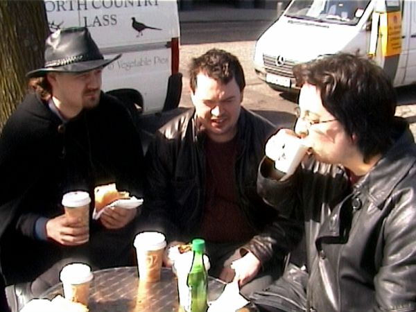
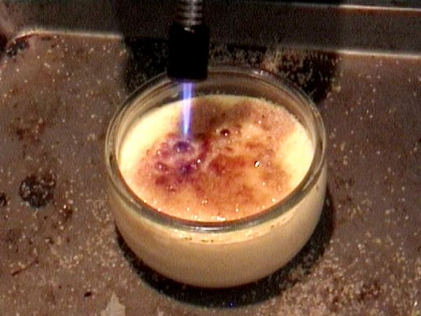
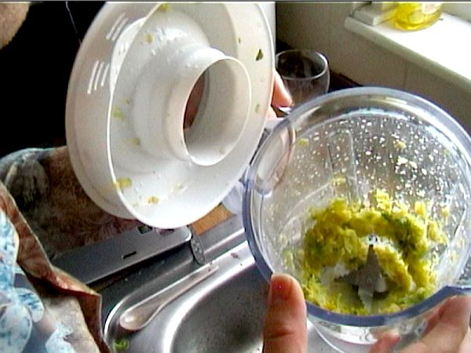
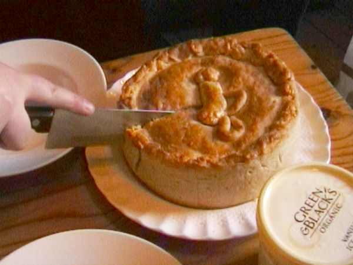
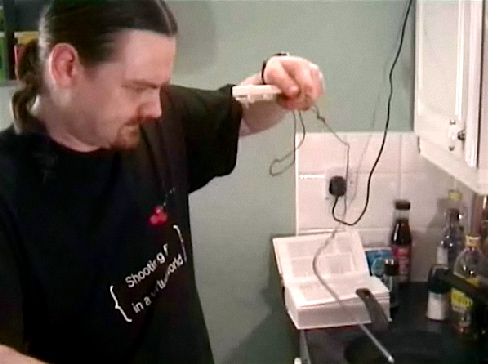

Episodes
First Episode: The Perfect Steak
We learn the science of the perfect steak - and how to cook it using a home vacuum cleaner and a blowtorch.
The Fife Diet - Part 1
]
Locally-sourced foods: saviour of the planet or big hippie fad? We attempt a week on the “Fife Diet”, eating only foods from the Scottish county of Fife, to find out. Part 1: to Fife!
The Fife Diet - Part 2

Locally-sourced foods: saviour of the planet or big hippie fad? We attempt a week on the “Fife Diet”, eating only foods from the Scottish county of Fife, to find out. Part 1: to Fife!
Blowtorches!

Are kitchen blowtorches highly specialised kitchen tools, or useless substitutes for a real blowtorch? We pit a kitchen blowtorch against a plumber’s blowtorch … against a hairdryer.
Mythbusting: Herbal Teas
Alex doesn’t believe that Camomile, Ginkgo or Valarian herbal teas work. So he’s testing them, with the aid of Guitar Hero, World of Warcraft, and a LOT of tea…
Normal Person vs … Gordon Ramsay

Can geek Johnnie cook Gordon f—ing Ramsay’s Brussel f—ing sprout souffle? We put the sweariest of all celeb chefs to the test.
Health Grills
We test a Health Grill. Scientifically. No, wait, that’s not right. Sureallistically. That’s it.
Mythbusting: Preheating Ovens
We investigate cooking myths - do you really need to preheat your oven or is it just a waste of energy?
Normal Person vs … Nigella Lawson

Normal People test celebrity chef recipes once again, as Alex takes on Nigella’s Double Apple Pie. Will it be scrumptious or scary?
Digital Thermometers - tested!

Digital Thermometers - total cooking revolution or big techie waste of time? Hugh attempts to convert the others to the Joy of Probes…
Blenders!
Will it blend? Or will it just splash FAIL around our kitchen? Kamikaze Cookery tests three stick blenders, investigates the wonderful world of soups and foams, and more.
Normal Person Vs… Jamie Oliver
We’re on a mission - to see whether celebrity chef recipes are any use to normal people. This week - Paul, Jamie Oliver, and a lot of pasta dough…
Mini-Episode: More Sous-Vide
Following on from The Perfect Steak, Hugh talks about other things we can cook sous-vide.
The Perfect Steak
We learn the science of the perfect steak - and how to cook it using a home vacuum cleaner and a blowtorch.
Three geeks. Cooking. With science.
And explosions.
Described as “Top Gear with food and without that twat Clarkson” (by one of our mates, admittedly), we’re putting the “fun” back into “food”. Which means we’re making “funood”. And lots of it.
We’re taking cutting-edge “molecular gastronomy” techniques and explaining them with inept cookery and sweary stick figures. We subject traditional cookery - whether that’s a Gordon Ramsey recipe or irrational beliefs about “sealing meat” - to rigorous, sort-of scientific testing. And, we teach you how to cook good food. With Science.
Also, we sometimes soak ourselves in apple juice, burn ourselves with hot metal, blow things up or nearly starve to death trying to live on a diet invented by hippies.
In Season 0 of KKCook (we index properly), we mythbust herbal teas and preheated ovens, test out blowtorches, blenders, and celebrity chef cookbooks, try to reduce our food miles (then realise it’s pointless), and teach you how to cook a perfect steak with a vacuum cleaner, a thermometer and a blowtorch.
Cookery. Now with Science. Sort of.
Watch.
(At the very least, you’ll get to see us hurt ourselves.)
If you want to contact us, you can email us at info at kamikazecookery [DOT] com. Or just comment on the blog or the episodes!
Your Hosts
Hugh

Hot from the fast-paced world of playing games all day, Kamikaze Cookery’s Executive Producer has no cooking qualifications whatsoever. Not even a Domestic Science GSCE.
But he has cooked a full-scale Roman banquet, attempted to buy liquid nitrogen for culinary purposes, built his own laboratory water bath, and read everything Heston Blumenthal has ever written. Literally.
If you want even more Hugh for some reason, he’s also the curator of the MMO Melting Pot.
Alex

Alex attempted to tell us that he wasn’t a great cook when we started filming KKCook. But we told him to shut up and hold this blowtorch.
Now, armed with an encyclopedic knowledge of beer and chillis and more Wikipedia pages than porn sites on his browser history, he is Kamikaze Cookery’s Stuff That The Other Two Don’t Know About expert.
Paul

Paul informs us that he’s an excellent cook. None of us have ever eaten anything he’s made, although Hugh has watched him make a Shepherd’s Pie from mince three days past its sell-by date.
But he rants like Bill Hicks on a caffeine overdose (and with an English accent and none of the Goatboy rubbish), he’s sceptical of any cookery innovation that’s less than 8,000 years old, and he’s got a sweet hat.
Read more →
Hello folks! We’re still here (sometimes) and I hope that you are, too. Cooking is still taking place, and sometimes we blog about it.
You might recall that about three years ago I performed a magnificent destruction of Jamie Oliver and all that he stands for. I’ve spent quite a lot of time over the intervening three years improving on his methods. Recently, over on my other blog, I combined everything together into the finest meatball lasagne el diablo you have ever seen.
I’ve had Italian people tell me that my recipe is not a proper ragu, but I don’t care, it’s still better than Jamie’s.
Who remembers the perfect steak? We love the perfect steak, but many people (read: nearly everyone except Hugh) claimed that sous-vide was too fiddly. It turns out that you can do it very easily in a cool box. I shall be trying this as soon as I get hold of a cool box. More general details on sous-vide are available from the same site. They also have a brilliant sans-sous-vide recipe for doing a steak in the pan, the way our ancestors did, if that’s more your thing. My friend at Northern Food has been having a great deal of fun practising this.
They seem to like their steak at that Serious Eats site. Here’s an article on why you should salt steak, as long as you do it right (hint: do it well before you cook the thing).
I hope these are helpful to someone. What other food sites (other than KKC of course) are on your required reading lists?
Read more →
Hey, guys! Long time no see. (Sorry about that - crazy busy on other projects. I haven’t forgotten about you, about KKC, or about food!)
I just had to nip over here to point out this truly fascinating article over at Meathead, about the science of what BBQ cooks refer to as the stall. “You get a big hunk-o-meat, like a pork shoulder for pulled pork or a beef brisket, two of the best meats for low and slow smoke roasting, and you put it on the smoker with dreams of succulent meat dancing in your head. You insert your fancy new digital thermometer probe, stabilize the cooker at about 225°F and go cut the lawn. Then you take a nap.
The temp rises steadily for a couple of hours and then, to your chagrin, it stops. It sticks. It stalls for four or more hours and barely rises a notch. Sometimes it even drops a few degrees. You check the batteries in your meat thermometer. You tap on the smoker thermometer like Jack Lemon in the China Syndrome. Meanwhile the guests are arriving, and the meat is nowhere near the 190°F mark at which these two cuts are most tender and luscious. Your mate is tapping her foot and you’re pulling your hair out.
Sterling Ball of BigPoppaSmokers.com, a major retailer of grills and smokers and a successful competition cook says that “no matter what I tell customers, when the stall hits them, they are horrified. It seems to last forever. They crank up the heat. They bring the meat indoors and put it in the oven. They call me at all hours.””
I’ve been experimenting with barbeque recently, and whilst I didn’t experience the stall with my tests, it’s nonetheless a really interesting bit of science. The solution’s simple, and the approach they take is really practical.
Highly recommended!
Read more →
So, it turns out that something rather alarming happened recently.
I became fat.
Well, fat-ish. Turns out that suddenly going from walking 4 miles or so a day to having access to a car will do Bad Things to your body fat percentage, particularly if it’s tied in with an increased consumption of sweet stuff. I FAIL at the blindingly obvious.
Fortunately, as a huge fan of Tim Ferriss, I’d been reading his new book, The Four Hour Body, whilst smugly thinking to myself “well, this diet stuff is interesting, but I don’t need it.” So, when it turned out that yes, Mr Blood Pressure Meter and Mr Groaning Scales agreed that I did indeed need it, stat, before I started to resemble a BBC report on Scottish health, I was prepared.
World of Warcraft players will have predicted what was coming next.
YOU ARE NOT PREPARED!
In this case, You Are Not Prepared for the sheer volume of one thing - beans.
Oh, God, Not More Beans
Tim Ferriss’s diet - which appears to be working rather stonkingly well, btw - works on one simple princple. There’s no calorie counting or going hungry - instead, you just drop all simple carbs and grains from your diet and replace them with beans. (Oh, and there’s a few other princples too - the diet’s explained online - but the beans are the issue here.)
This works. It’s nutritionally sound. Unfortunately, for a foodie, it has one major flaw.
Exactly how many ways do you know to cook fucking beans? Or equally fornicating lentils?
Tim Ferriss is a big fan of just repeating a few simple meals. Were I to follow that advice, as a hardcore foodie, I’d soon be a big fan of stabbing random strangers in the street - and I live in Edinburgh, not Glasgow, so that sort of thing’s really not done.
So began my quest for more interesting ways to cook sodding legumes.
I suspect this is going to be a multi-part series, at least until “svelte” is an adjective that can be applied to me in a non-ironic way, but for now, here are some of the ways I managed to stave off psychotic rage in the first few weeks:
Basic Bean Tricks
There’s virtually nothing on earth that doesn’t taste better sauted with butter and garlic, and optionally chilli. This was true of jellyfish when I foolishly tried to cook the stuff for a Chinese banquet, and it’s equally true of almost any flavour of beans. Lentils and, unsurprisingly, butter beans work particularly well. Yes, butter’s fine on the diet, according to Tim.
There are more beans out there than you think. I strongly recommend Wikipedia-ing legumes, and looking through the list. For me, frozen broad beans have been a recent lifesaver - I like the things, they taste nice sauteed with butter - win. For my girlfriend, the discovery that peas can - sorta (they’re a bit low-calorie) - substitute for other legumes prevented her from gnawing on the cat in sheer hunger.
If you don’t like beans, try black beans. They work tremendously well with soy sauce, they’re a lot darker and meatier-tasting than most beans, and they have a different texture, particularly if fried up.
Most stock cubes are dubious diet-wise - sugar bad. But Swiss Boullion or other vegetable boullion is fine, and will really enhance the taste of just about any liquid dish.
Right. Now for a couple of recipes.
Yes, I said recipes. I know that normally KKC has a bit of a thing about recipes - as in, we hates them, we hates them forever - but in this case, I discovered that about the point that you’re going “Oh, shit, no rice, pasta, noodles, cheese, milk, or potatoes! I’m going to stab myself with my $200 razor-sharp hand-made folded-steel chef’s knife!”, having a simple instruction manual helped.
Nigel Slater’s Lentil And Tomato
When I first went onto the 4HB diet, I immediately ran, not walked, to my bookshelf to check what Nigel Slater said about beans. The man’s a culinary genius, and the only cookbook writer I know to have never written a recipe that I’ve not found awesome. (Gogo double negatives.)
Sadly, he only really had one 4HB-compatible recipe - but it’s a doozy. Turning a couple of storecupboard ingredients - cheap ones at that - into a wonderful, rich, filling dish with tons of flavour, a bit of spice, and a fantastic balanced texture - genius. Here’s my slightly adapted version.
You’ll need some red lentils - about 150g for a lunch for two people - a can of tomatoes, a bay leaf, some chilli, some onion and garlic, and that’s it.
Stick the lentils in boiling water with the bay leaf, for about 10 minutes. Whilst they’re boiling, chop and gently fry an onion and some crushed or chopped garlic. Add a bit of chilli about 2 minutes in.
Keep tasting the lentils - when they’re tender, drain them, and stick some tomatoes in with the onions for a couple of minutes. Then tip the whole lot together, stir well, taste, add boullion if you like, plenty of black pepper, and serve.
Delicious, quick, warming, and cheap as hell.
Ratatouille With Beans
An accidental discovery, this one, whilst attempting to persuade my girlfriend that beans could actually be edible.
It’s got all the positive characteristics of a normal ratatouille - plenty of complex flavours, comparatively simple to cook - but is even more filling. Add some grilled meat and you’ve got a pretty kick-ass meal.
You’ll need a couple of zuchinni aka courgettes, some onion and garlic (hell, just assume ANYTHING I cook has onion and garlic), some decent red wine (go for Pinot Noir to collect full Ferriss points), some tomatoes (fresh, not tinned), some thyme (dry is OK, fresh is better), some olive oil, some boullion if you have it and some meaty-tasting beans - I used one can of borlotti and one of haricot, but it’s up to you.
This one’s simple but slow. Dice the onion and the courgette, then heat some olive oil in a big pan (yeah, I know, I know, Tim’s over the olive oil thing - but the olive oil adds to the taste here) and gently fry the two for a while. Ideally you want nice soft, golden onion. Chop the tomatoes into eighths whilst you’re waiting.
Now add the garlic and the tomatoes, with the thyme and about half the wine, and cook for about 15 minutes. I don’t skin the tomatoes because a) I like a nice rustic style dish and b) skinning tomatoes is about as much fun as trimming a cat’s toenails, and I like to do it about as often.
Now, add the beans (rinse them first unless gas and intestinal pain is your kink - hey, I’m not judging) along with the rest of the wine. Cook for another 10 minutes, season, and serve.
Want more?
I’m interested to know if this topic’s of interest to everyone. Would you like to see more 4HB foodiness?
Read more →
A great series of posts from Martin “Khymos” Lersch at the moment, as he’s going through everything he learned from a recent Molecular Gastronomy seminar in Copenhagen.
Today’s one is on stocks - and the big takeaway for me was a detailed discussion of exactly how long meat stocks can be reduced for before they turn bitter.
The TLDR? 15-20 hours over a low heat. Wow, that’s a LOT longer than most people recommend.
Read more →
So, as you know, at KKC we’re fairly opposed to recipes in any way, shape or form.
But I’ve been thinking about the things recently, and I’m starting to come to the conclusion that there are times and places for such things.
For example, I’d argue that there’s no bloody point whatsoever in any chilli recipe that’s less well tested than Heston Blumenthal’s “Perfect” one. You’re better off understanding the components of chilli (the mince, the vegetables, the chillis themselves, the accompaniment, the beans) and then you can produce not just one chilli, but whatever chilli you like.
A light, firey one with a single bhut joloka and turkey mince. A Texas-style one with cornbread and no beans. A heavy, satisfying beef-based chilli with chopped beef and gentle fire from normal red chillis and some peppers. There are infinite chillis.
On the other hand, if you’re baking bread, you need a recipe, or the damn thing just won’t rise. And if you’re wanting to produce really amazing food beyond your own level, about the only way to do it is to follow a really great chef’s recipe to the letter, as I’ve done several times with both Heston Blumenthal and Thomas Keller’s work. There’s no way I could improvise something that stunning in a million years.
But then there are middle ground elements. Thai curry pastes, for example. Are you better with a recipe or an understanding? When I came to write this post, I was all prepared to say “look, you need a recipe for a thai curry paste”, but now I’m wondering. I don’t understand the ingredients enough, but maybe if I did I could improvise my own to do whatever I wanted at the time.
When do you think you need a recipe? And when are you better to have understanding and flexibility?
Read more →
Advanced warning - this will not be a fun read.
One of the things I’ve been really enjoying about the new KKC infodump posts (you can see them at the bottom right) is that they’re fairly frequently clueing me into food things I didn’t know about before. I mean, I had no idea what shade-grown coffee was before I commissioned someone to write about it, and the entire coffee pods thing is a completely new world to me.
And then I asked someone to write about fair trade chocolate facts .
And frankly, I felt decidedly ill afterward.
I support Fair Trade, generally. Occasionally I support coffee vendors like Has Bean (no, they don’t pay us anything, we just really like them) who don’t do Fair Trade, but do actually visit the farms they buy from and work hard to offer a fair price. But occasionally I’ll grab some non-Fair Trade coffee, and non-Fair Trade other stuff. Sure, it’s not great that people aren’t getting paid well for their work, but I wasn’t that guilty about it.
And then Hope wrote up a piece on chocolate, and Fair Trade.
Non-Fair Trade chocolate means poor farmers? No.
If you’re buying non-Fair Trade chocolate, it turns out, you’re probably funding people who enslave children.
Fuck.
h2. One in twenty of the people picking your chocolate are child slaves.
See, most of the cocoa beans that are used to make chocolate come from West Africa and specifically the Côte d’Ivoire, which, it turns out, is not a very nice place. There are numerous reports of children from neighbouring countries to the Ivory Coast being lured or otherwise trafficked there and sold as slaves.
UNICEF, who aren’t exactly shrill hippies, released an official report in 1998 concluding that some of the Ivory Coast cocoa farms they surveyed did indeed use enslaved children. They’ve restated their position as recently as 2007, saying that “children from neighbouring countries such as Burkina Faso, Togo and Mali are brought to Côte d’Ivoire to work in its robust cocoa farming industry, among other outlets for child labour. Their rights are not respected and they are exposed to wide-ranging exploitation and abuse”.
Fortune Magazine - again, not exactly the Usual Suspects on green/ethical issues - as recently as 2008, said that little progress has been made in dealing with the child slavery problems on the Ivory Coast.
There are a whole load of other reports on this stuff, some of them decidedly don’t-read-whilst-eating. Wikipedia, unsurprisingly, has a very solid overview of the evidence. The BBC’s Panorama program did independant research into the issue and came to some pretty hair-raising conclusions (although read down for the full article, the summary was written by someone who had gotten a bit high on his own, presumably fairly traded and exploitation-free, supply).
In summary - yup, about 5% of this stuff - one in twenty chocolate bars you buy - was grown by some kid, probably less than 13 years old, who has been kidnapped from their parents and is forced to work by men who hit him or her if they don’t think the cocoa picking is going fast enough.
If you’re feeling sick at this point, you’re not the only one.
I think about all the chocolate I’ve eaten in the last year alone, and I don’t feel too well.
h2. So what the fuck to do about it?
I really don’t know. Obviously, Fair Trade chocolate kinda shoots up in priority once you know about this stuff. Higher than free range chicken (tortured chickens or tortured kids is a pretty easy call to make), higher than most other kinds of Fair Trade stuff, generally to the top of the food chain.
Ironically for a UK-based blog, we’ve only got a guide - and a brief one - to the US Fair Trade Chocolate brands at KKC. For UK people like me, the best source I’ve been able to find is the Observer’s article on ethical chocolate (Green and Black’s? Not as ethical as they claim).
Beyond that, you/we could write letters, of course. A letter to Cadbury’s in the UK suggesting that they check the living shit out of their Faid Trade supply chain would be a good start. For more info, there are a lot of organisiations working on this problem, from the Cocoa Initiative to Stop Chocolate Slavery . They’ve got lots of suggestions on what to do.
But overall, I didn’t write this piece to sell you on any particular action. I just figured that something this horrifying is something that more people should know about, particularly when we’re often innocently funding it. So I guess that’s the other thing that you can do - tell people. Make sure everyone knows what’s happening to supply that chocolate.
I simply couldn’t believe what I was reading when I started getting articles on this stuff.
But it’s incontrovertably true.
I wish it wasn’t.
Read more →
The best blue electric kettle is up for debate today. Obviously electric machines are very popular, and to meet the demand there are tons of companies that make them. In other words, finding the right one is not that easy. If you are stuck as to which one to buy, here is one to consider:
Alessi MG32
I’ll warn you now - this isn’t a cheap kettle. In fact, it’s a pretty amazingly expensive one. However, it’s worth it.
First, it looks great. It’s designed by architect Michael Graves, and it’s been a favourite design for more than 25 years now. The earlier versions were not electric, but the newer electric models share the same style as the older ones. The outside is stainless steel, and is surrounded by a bright blue bottom and handle. It is topped off by an interesting bird spout, which is pretty much unique on the market.
In other words, this one is not for the faint of heart, and is definitely for the more daring homeowner.
The other reason it is one of the best is that it is actually quite functional. In other words, it does not sacrifice functionality for style. First it is made with quality stainless steel, which is a marked upgrade over the cheaper plastic material many models use.
Plastic not only does not last as long, but also many owners have trouble adjusting to the foul smell the material gives off. For both these reasons, stainless steel is superior. Another great thing about this model is that it boils a maximum load, 1.4 liters of water, within 4 minutes - pretty swift.
The one negative about this model is the price. Due mostly to the unique styling, it sells for $300 at most sites, which is 200-300% as much as other models. Obviously the functionality is good, but it really is not that much superior in quality to other models.
In other words, you are paying for the design - make no mistake about it. It’s a premium price, but f you are looking for a way to spruce up your kitchen, then you simply cannot beat this model.
The bottom line is, the Alessi MG32 is one of the, if not the top blue electric kettle on the market. It is expensive. However, check [http://www.eBay.com]. Here you can occasionally find it for as low as $240 in some instances.
Definitely wanting a cheaper blue kettle? Well, you won’t find anything this nice. However, the Morphy Richards “Accents” pyramid kettle has a similar vibe - it’s stainless steel, it’s quite traditional in appearance, and importantly it gets stellar reviews from users. Not a designer kettle, maybe, but a good alternative.
Read more →
No one could have predicted a yellow crescent shaped fruit would incite controversy and debate (Unless you’ve been following our other articles on Fair Trade chocolate, for example - Hugh).
The battle between organizations promoting fair trade bananas and large corporations is an epic battle with its share of tragedy. The public has little knowledge of the global banana wars and the battles fought every day. According to the United Nations, over 6.4 billion pounds are consumed in the United States each year. The United States is not the only banana nation. Europeans love their bananas as well.
We want our bananas and it does not seem to matter how we get them. The United States produces very few bananas and must import nearly all 6.4 billion pounds. The bananas are imported from several countries and this is where the battle is fought. On one side are Fair Trade organizations and the other side are major food corporations. According to Green America, the Dole and Chiquita corporations control 50 percent of the bananan market.
The heart of this issue is not the bananas; it is the people that work hard every day to supply the world with bananas. The problem is the large corporations set the price for the bananas not the people that grow them. The price that is set benefits the bottom line of the corporations. The wages for workers in the banana trade are typically less than half of what is needed to make a decent living. For example, to meet basic needs in Ecuador a worker must make at least $9.60 per day. According to TransFair USA, most workers are paid as little as $3.00 per day.
(The stuff that happens around the chocolate industry is even worse, by the way. You should really, really learn about fair trade chocolate facts .)
The goal of fair trade groups is to provide at least the minimum amount of for workers to meet basic needs. In Ecuador, this would equate to $9.60 per day. In addition, fair trade also pushes for health care benefits for workers. Many argue that fair trade bananas will increase the price of bananas making them less affordable for consumers. There are many fair trade products on the market such as coffee. The price is higher than conventional coffee, however, millions of consumers choose to support fair trade products.
Regardless of where one stands on this issue, consumers should have the right to choose fair trade bananas over conventional bananas. While consumers prefer cheap bananas, many consumers prefer to be conscientious about the products they purchase. Given the choice, millions of Americans would prefer to buy fair trade bananas, while millions more just want cheap bananas. This issue is complex and both sides will continue to fight over one of the world’s favorite fruits.
Read more →
It’s easy to forget just why electric kettles, and particularly electric orange kettles are so damn awesome.
(Wrong colour? No worries. You can read about finding a pink kettle and a yellow kettle on this site too - Hugh)
This wonderful energy savings appliance can boil water to the perfect tea temperature in 2 to 5 minutes. This will even turn itself off automatically when the liquid inside has reached the desired temperature.
Boiling water twice as fast as a pot placed on a stove, an electric kettle saves money. According to The Energy Savings Blog at www.energy.gs, the electric kettle they tested produced a full kettle of hot water for about two pence or .16 kWh while a cup of water only cost .04 pence and uses .03 kWh. Heating only what is needed saves money. These costs vary depending on the cost of electricity.
(They’re quieter than stovetop kettles too - although we have yet to find a truly silent kettle orange? Well, the unique color reminiscent of the 1970s promotes continual good health and abundant energy, symbolizes the warmth of a glowing fire in the hearth and brings about positive change in the life of its owner. Orange might not be the ideal choice for a cool, modern kitchen, but if you want a quick dose of vibrancy and colour in your day, Colour Theory suggests that orange will make you think of youth, energy and life. Go go orange electric kettle - bring some life to your kitchen.
If you’re really looking for an exclusive kettle, the Bugatti Vera orange kettle is for you. At a frankly heartstopping price of £184 ($270 approx), this one’s definitely a kettle for someone with money to splash - but on the other hand, many reviews are ecstatic about the darn thing. It’s apparently a design sensation - although other commenters suggest it’s a design sensation that stops working rather quickly! You pays your money and you takes your choice, but personally I’d go for…
The Bodum range of orange kettles - pretty much the entire Bodum kettle range is available in orange - would be my choice if I decide to head up the colour spectrum. None of them are the design miracle that the Bugatti is, but from reports they work far better, and are pretty likely to still heat water as well as looking pretty in three years. The IBIS range comes in for particular praise, mostly collecting five-star reviews on Amazon. None of the other orange options from other manufacturers attract anything like the same sort of enthusiasm.
So. Want warm colours and hot water, together at last? Grab a Bodum orange kettle.
Read more →